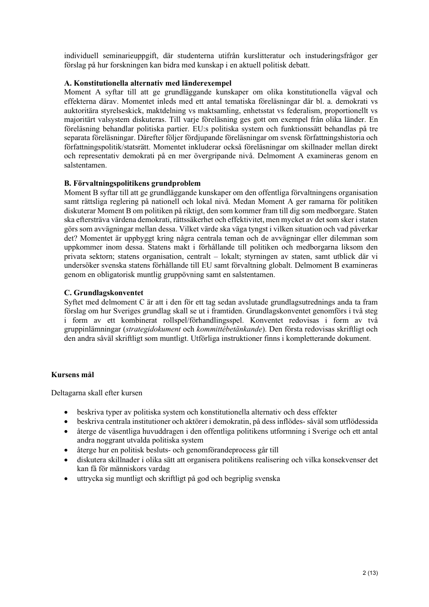
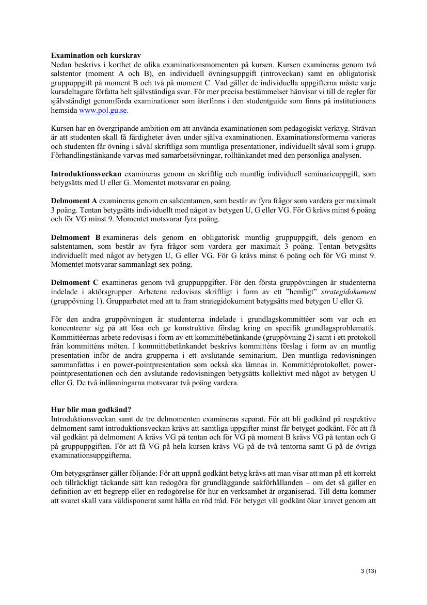
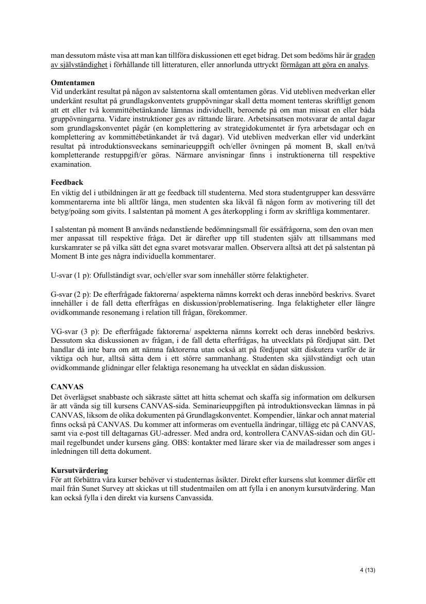

Belägg för examinationsmatrisens markeringar · Källa: kursguide V26
Tabellen nedan styrker examinationsmatrisens markeringar för SK1113 mot kursguide V26. Varje markerad examinationsform har ett kort citat och en sidhänvisning. Källsidorna återges som bilder nederst på sidan.
| Examinationsform (per matris) | Citat ur kursguide V26 | Källa |
|---|---|---|
| Salstentamen | Delmoment A examineras genom en salstentamen … Delmoment B examineras dels genom en obligatorisk muntlig gruppuppgift, dels genom en salstentamen. |
Sid 3 Se sida → |
| Seminarieinlämning / memo | Introduktionsveckan examineras genom en skriftlig och muntlig individuell seminarieuppgift, som betygsätts med U eller G. |
Sid 3 Se sida → |
| Rollspelsdokument | Arbetena redovisas skriftligt i form av ett ”hemligt” strategidokument (gruppövning 1) … Kommittéernas arbete redovisas i form av ett kommittébetänkande (gruppövning 2). |
Sid 3 Se sida → |
| Muntlig presentation | I kommittébetänkandet beskrivs kommitténs förslag i form av en muntlig presentation inför de andra grupperna i ett avslutande seminarium. |
Sid 3 Se sida → |
| Seminariedeltagande | … ett avslutande seminarium. Den muntliga redovisningen sammanfattas i en power-pointpresentation som också ska lämnas in. Kommittéprotokollet, power-pointpresentationen och den avslutande redovisningen betygsätts kollektivt … |
Sid 3 Se sida → |
| Rollspel / simulation | Grundlagskonventet genomförs i två steg i form av ett kombinerat rollspel/förhandlingsspel. |
Sid 2 Se sida → |

Sida 2 — Introveckan, delmoment A–C, kursens mål
Sida 3 — Examination och kurskrav (detaljer)
Sida 4 — Hur blir man godkänd, omtentamen, feedback